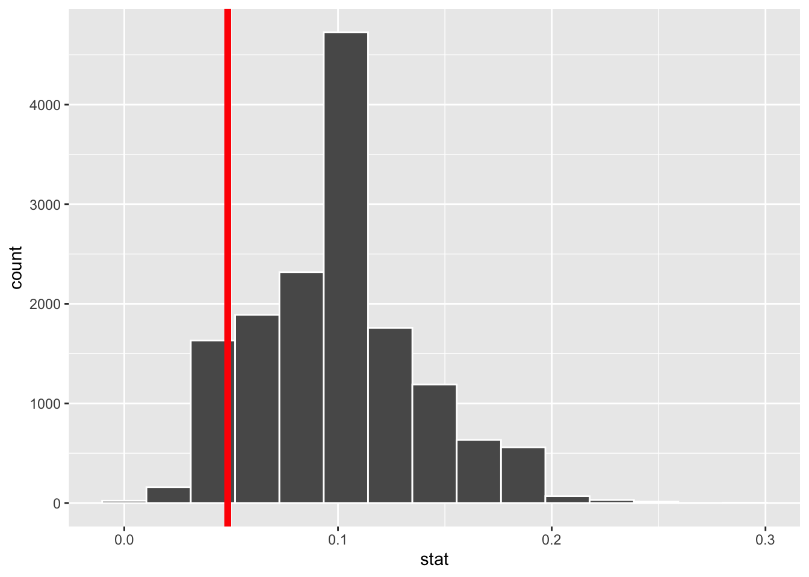
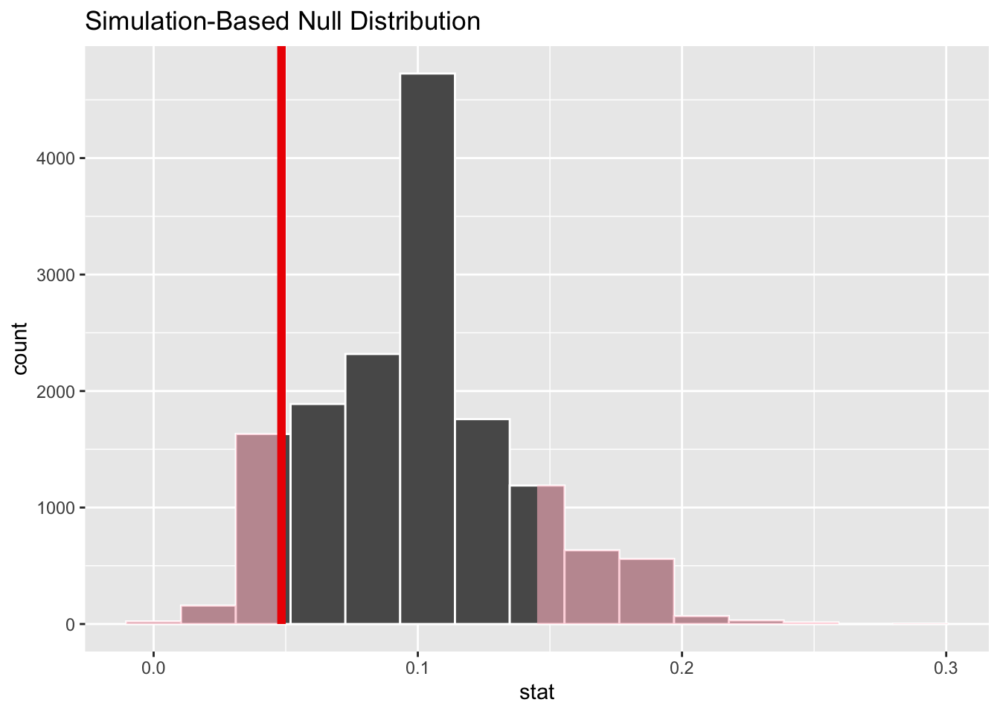

library(tidyverse)
library(tidymodels)
library(openintro)Hypothesis testing with randomization
An hypothesis test is a way of determining which of two competing claims a dataset is most consistent with. If, for example, we are investigating the value of a true but unknown probability \(p\), we state the claims as null and alternative hypotheses:
\[ \begin{align*} \text{H}_0&:p=p_0\\ \text{H}_A&:p\neq p_0 \end{align*} \] So the question becomes “is the true value equal to the hypothesized value, or is it not?” To answer this, we must judge how compatible our point estimate \(\hat{p}\) is with \(p_0\), and we do this by calculating a \(p\)-value and deciding if it is small enough.
This primer leads you down the path of least resistance to calculating the \(p\)-value.
Load packages
Dataset: medical consultants for organ donors
Some prospective organ donors hire a medical consultant to advise and assist in aspects of the surgery. We would hope that, by hiring this person, we decrease the risk of complications. If we did not hire anybody and just went in blind, the average complication rate for liver donor surgeries in the US is known to be about 10%.
So say we are interviewing a medical consultant, and we must decide whether or not to hire her. Some of her clients will experience complications, and some will not. Intrinsic to her is her personal “complication rate” \(p\) – the probability that a given client of hers experiences complications. If her complication rate is 10%, we are wasting your money hiring her because she is no better than if we went in blind. If her complication rate is greater than 10%, that’s even worse. If her complication rate is less than 10%, then great! Hire her.
So we are interested in these hypotheses:
\[ \begin{align*} \text{H}_0&:p=0.10\\ \text{H}_A&:p\neq 0.10. \end{align*} \] In order to evaluate these competing claims about the effectiveness of the consultant, we have historical data on her track record:
organ_donor <- read_csv("organ-donor.csv")
organ_donor# A tibble: 62 × 1
outcome
<chr>
1 complication
2 complication
3 complication
4 no complication
5 no complication
6 no complication
7 no complication
8 no complication
9 no complication
10 no complication
# ℹ 52 more rowsShe has advised 62 liver donors in her career, and this code calculates the proportion of those donors that experienced complications:
obs_stat_donor <- organ_donor |>
specify(response = outcome, success = "complication") |>
calculate(stat = "prop")
obs_stat_donorResponse: outcome (factor)
# A tibble: 1 × 1
stat
<dbl>
1 0.0484So 3 out her 62 clients, or about 4.8%, have experienced complications. 4.8% is smaller than 10%, so she would appear to be better than average and worth hiring. But 4.8% is a noisy estimate based on imperfect data, and we might wonder if we have enough information to confidently conclude that she is better than average. Maybe these results are simply due to chance, and if instead she had worked with 200 clients, it would become clear that her skills actually correspond to 9% complications, or 11% complications. How can we tell with the information we have? That’s what hypothesis testing is all about.
Simulating the null distribution
In order to assess whether or not the point estimate of 4.8% is compatible with the hypothesized value of 10%, we look at the null distribution of the estimator. This is the hypothetical sampling distribution that the sample proportion would possess if the null hypothesis happened to be true. When we visualize this distribution, it displays the range of values that our estimate would be likely to have if the null were true. We then compare this to the actual estimate that our actual data actually gave us, and if the actual estimate and the null distribution appear to be incompatible with one another, then we reject the null hypothesis and accept the alternative.
The following code simulates the null distribution of the sample proportion:
set.seed(25)
null_dist_donor <- organ_donor |>
specify(response = outcome, success = "complication") |>
hypothesize(null = "point", p = 0.10) |>
generate(reps = 15000, type = "draw") |>
calculate(stat = "prop")
null_dist_donorResponse: outcome (factor)
Null Hypothesis: point
# A tibble: 15,000 × 2
replicate stat
<int> <dbl>
1 1 0.0645
2 2 0.0484
3 3 0.113
4 4 0.0806
5 5 0.145
6 6 0.145
7 7 0.113
8 8 0.0806
9 9 0.113
10 10 0.145
# ℹ 14,990 more rowsSo this code generates 15,000 fake data sets, and calculates the sample proportion of “complications” for each one. Here is what each line is doing:
set.seed(25): we are setting the random number seed to ensure that our results are perfectly replicable;specify(response = outcome, success = "complication"): first we specify which column in our data frame we are using, which is easy in this case because there is only one:outcome. That column is a categorical variable with two levels, so next we have to tell the computer which level (“complication” versus “no complication”) we are calculating the proportions of;hypothesize(null = "point", p = 0.10): since our null hypothesis is checking a single hypothesized value (as opposed to many), we have a point null hypothesis, and then we tell it the hypothesized value – 10% in this case;generate(reps = 15000, type = "draw"): the null distribution is a sampling distribution, the same as when we studied confidence intervals and bootstrapping. So here we tell it how many alternative, hypothetical datasets we wish to simulate in order to get a pretty-looking histogram. The more the merrier, I say;calculate(stat = "prop"): the statistic we are estimate is the sample proportion in this case. On Lab 5 we considered other statistics of interest: sample means, medians, standard deviations, and so forth.
Visualizing the null distribution and observed statistic
When we simulate the null distribution of the sample proportion as above, we get a list of 15,000 numbers. To visualize the null distribution, we can simply plot a histogram of these, and to visualize where the actual estimate of 4.8% falls in that distribution, we can add a vertical line:
ggplot(null_dist_donor, aes(x = stat)) +
geom_histogram(bins = 15, color = "white") +
geom_vline(xintercept = obs_stat_donor$stat, color = "red", linewidth = 2)
Inspecting the picture, we see that our estimate is not smack in the middle of the null distribution, nor is it far out in the tails away from any of the values we simulated. So eyeballing the picture will not lead us to a firm conclusion. We need something quantitatively more precise.
Visualizing the p-value
The \(p\)-value is the probability, assuming the null is true, of observing a sample statistic as or more extreme then the one we actually got. So it’s the probability under the null of seeing something even farther to the left of 4.8%, or something correspondingly far to the right. Here’s what that looks like:
null_dist_donor |>
visualize() +
shade_p_value(obs_stat = obs_stat_donor, direction = "two-sided")
The fraction of the area shaded red is the \(p\)-value.
Computing the p-value
This code calculates the \(p\)-value:
null_dist_donor |>
get_p_value(obs_stat = obs_stat_donor, direction = "two-sided")# A tibble: 1 × 1
p_value
<dbl>
1 0.241The \(p\)-value is quantifying how far out our estimate is in the tails of the null distribution. If the estimate is far out in the tails, the \(p\)-value will be small, and this provides evidence that the estimate and the null are incompatible, and therefore the null should be rejected in favor of the alternative. If the estimate is closer to the middle of the null distribution, the \(p\)-value will be large, and this means that we cannot rule out the null hypothesis.
In this case, we calculated a \(p\)-value of 24.1%. Is that small enough to jump to a conclusion? It ain’t 80%. It’s less than 50%. But it ain’t 1% either. How small is small? We will pick this question up in lecture.